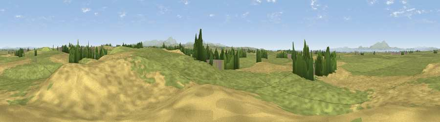

Viewpoint near Holme St Cuthbert
#20431 in England · top 79% of its area beats it · near Holme St CuthbertThe view, rendered

A 360° render of this exact spot computed from the terrain model, tree cover and land cover — summer colours, afternoon light, calibrated against photographs of famous viewpoints. Real trees, hedges and buildings will differ in detail.
The panorama
Grey silhouette: terrain skyline in each direction (720 bearings, Earth curvature and refraction included). Dashed green: skyline with trees (+15 m) and buildings (+8 m) as obstacles. Blue strip: how far the ground is visible on each bearing.
Where the view opens
Wedge length = distance to the farthest visible ground on that bearing (vegetation-aware). Rings at 10, 25 and 50 km.
What fills the view
69% grassland · 25% cropland · 3% woodland · 2% water · 1% built-up
Angular shares of the visible panorama (visual magnitude), not map area. Landscape diversity 0.37 (0–1 Shannon).
Key numbers
More beautiful places nearby
The staircase of upgrades: each row has a higher view potential than everything closer. Driving times are estimates from straight-line distance, calibrated against real road routing — check an actual route before setting out.
| Place | Direction | Drive | Score |
|---|---|---|---|
| High West Hill | NE · 2 km | ~4 min | 59.8 |
| Hards Farm Hill | E · 2 km | ~5 min | 69.9 |
| Viewpoint near Birkby | SSW · 11 km | ~21 min | 72.1 |
| Viewpoint near Bothel | SE · 11 km | ~21 min | 75.1 |
| Viewpoint near Tallentire | S · 11 km | ~22 min | 75.4 |
| Moota Hill | SSE · 11 km | ~22 min | 77.3 |
| Viewpoint near Bewaldeth | SE · 15 km | ~27 min | 78.0 |
| Binsey | SE · 16 km | ~29 min | 80.5 |
54.81124, -3.38953 · source: osm peak · position refined by local search. Computed location — check access rights before visiting.